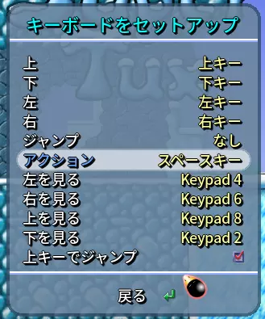

・Windows,macOS,Linux
投稿日:2022/8/3 最終更新日:2022/8/15
対応OS:Android,Windows,macOS,Linux
※ここではLinuxで遊んでいます
SuperTux
・Android
・Windows,macOS,Linuxここからダウンロード
例のゲームととても似ているゲームです。
あのおじさんではなく、Linuxの公式マスコットであるTux(タックス)というペンギンが主人公となっています。
このゲームの凄いところは、これほどのクオリティなのに広告なし完全無料という点です！ ぜひ遊んでみてください！
Options > Select Langage > Japanese
で日本語化できます。
Linuxの場合、端末から
PCの場合、
オプション > キーボードをセットアップ からキーボードのボタン一つ一つの役割を変更することができます。
既定の設定では左右の移動は矢印キーで行うのにジャンプはスペースキーという変な設定になっているので、上矢印キーなどに変更します。
ちなみに、おすすめの設定はこれです。

このゲームとても面白いのでやってみてください！